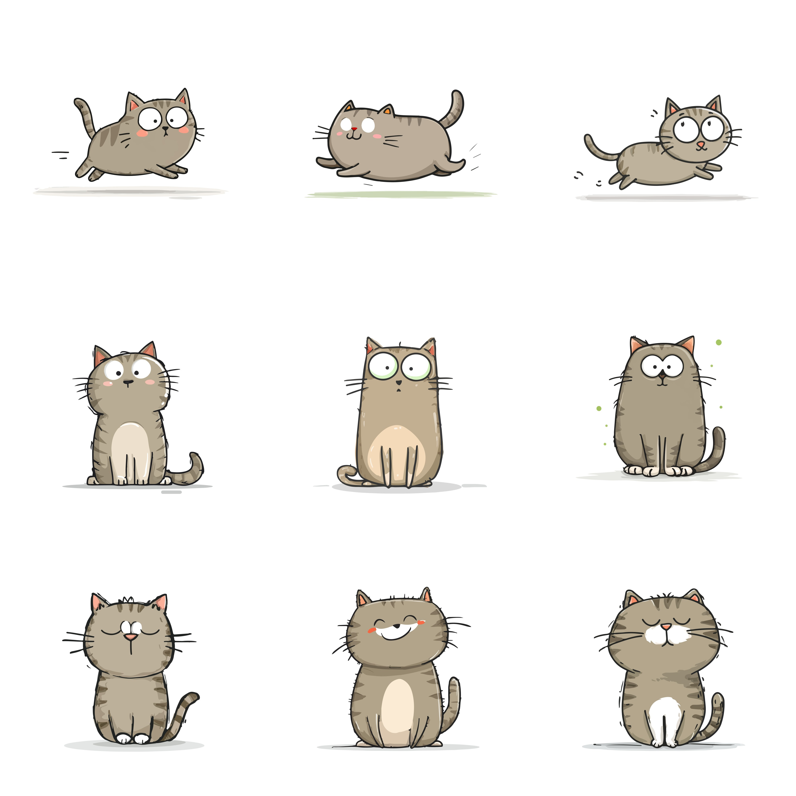

Welcome to the Cat HUB!

Photo by Ngoc Khoa Hoang on Unsplash
An Introduction about Cats
Cats are extremely interesting to me. Did you know that cats spend up to 50% of the time they are awake grooming? Turns out this behavior is to either cool off, clean their coats and to also remove their scent to stay invisible to prey and predators. Cats also possess night vision that is six times better than humans, their hearing is also unique as they can detect high-frequency sounds up to 64,000 Hz. A cats hunting skills are excellent even when they are domesticated. Cats are considered opportunistic hunters, which means they like to hunt for fun instead of just for food. Some cats after they hunt outside will bring the deceased prey to their owners doorstep, this generally means the cat feels safe with their humans and it is their natural instinct to do so.
Common Cat Breeds
- Maine Coon: Known for their very majestic large size and fluffy tails. They are often called "gentle giants" due to their friendly and sociable personalities.
- Siamese: Famous for their blue eyes and vocal nature.These cats are highly intelligent and often form very strong, loyal bonds with their favorite humans.
- Bombay: Recognized by their black coat and striking gold/copper eyes. They are known for being affectionate "velcro cats" that love to cuddle and stay close to their owners.
- Bengal: Loved for their wild, leopard-like coat patterns. Bengals are incredibly active and playful, often enjoying activities like playing in water or learning tricks.
Click on the breed names above to learn more!
Cat Care Essentials
| Item | Purpose |
|---|---|
| Quality Food | Provides necessary nutrients for their growth and health. |
| Scratching Post | Keeps claws healthy and saves your furniture. |
| Interactive Toys | Ensures mental and physical exercise along with entertainment. |